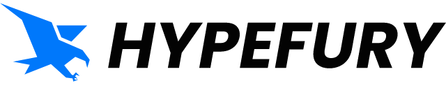
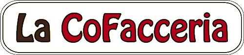

Process automation
Too many hours on repetitive work? You tell me the problem, I build the automation.
Free callBook a call
I take the work your team still does by hand and rebuild it as software that runs on its own.
I've worked with


Too many hours on repetitive work? You tell me the problem, I build the automation.
Don't know where to start with AI? I teach you and your team to use it in your daily work, on your own.
What each team was doing by hand, what runs now, and what it changed.
"Sam has done an amazing job programming all kinds of stuff… that is making these new shows so much more efficient and productive."Yaron Brook, host of The Yaron Brook Show
"Samuele is a star." "And a genius."The Hypefury team, on the onboarding emails I run Read the thread on X →